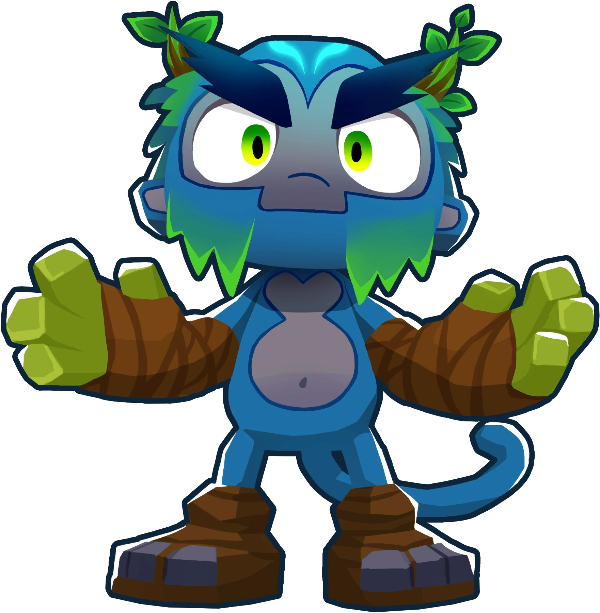
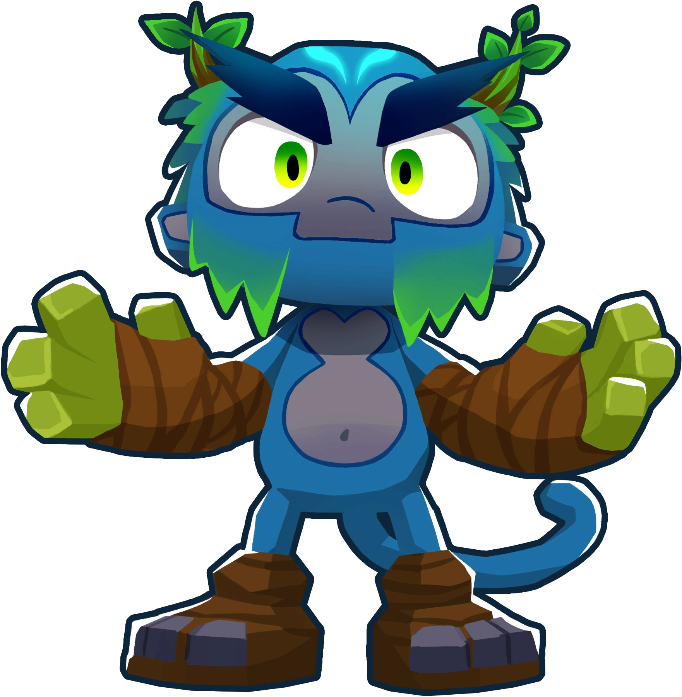
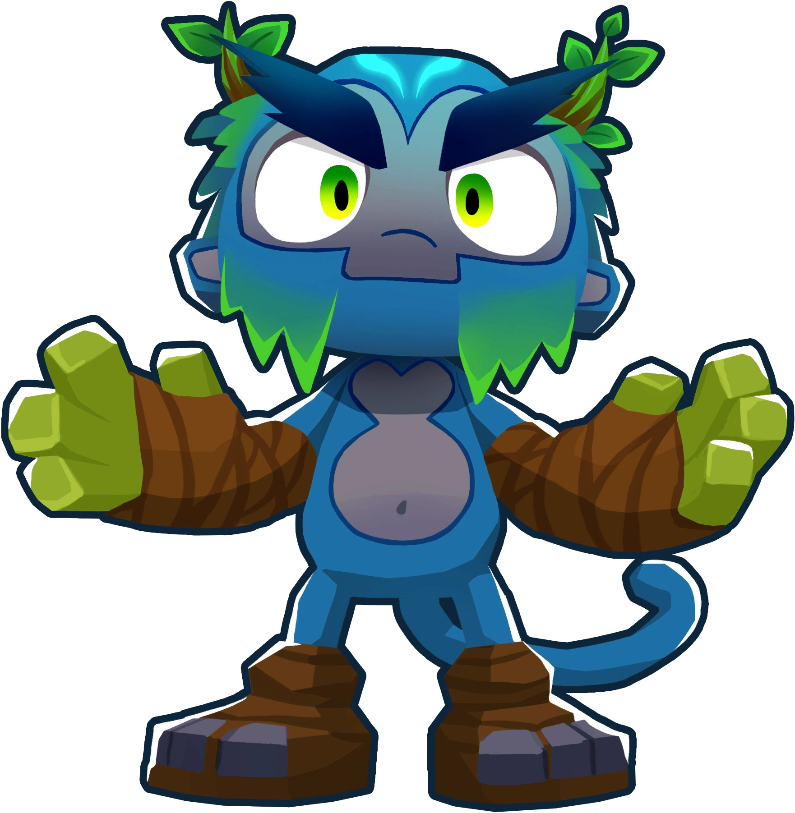
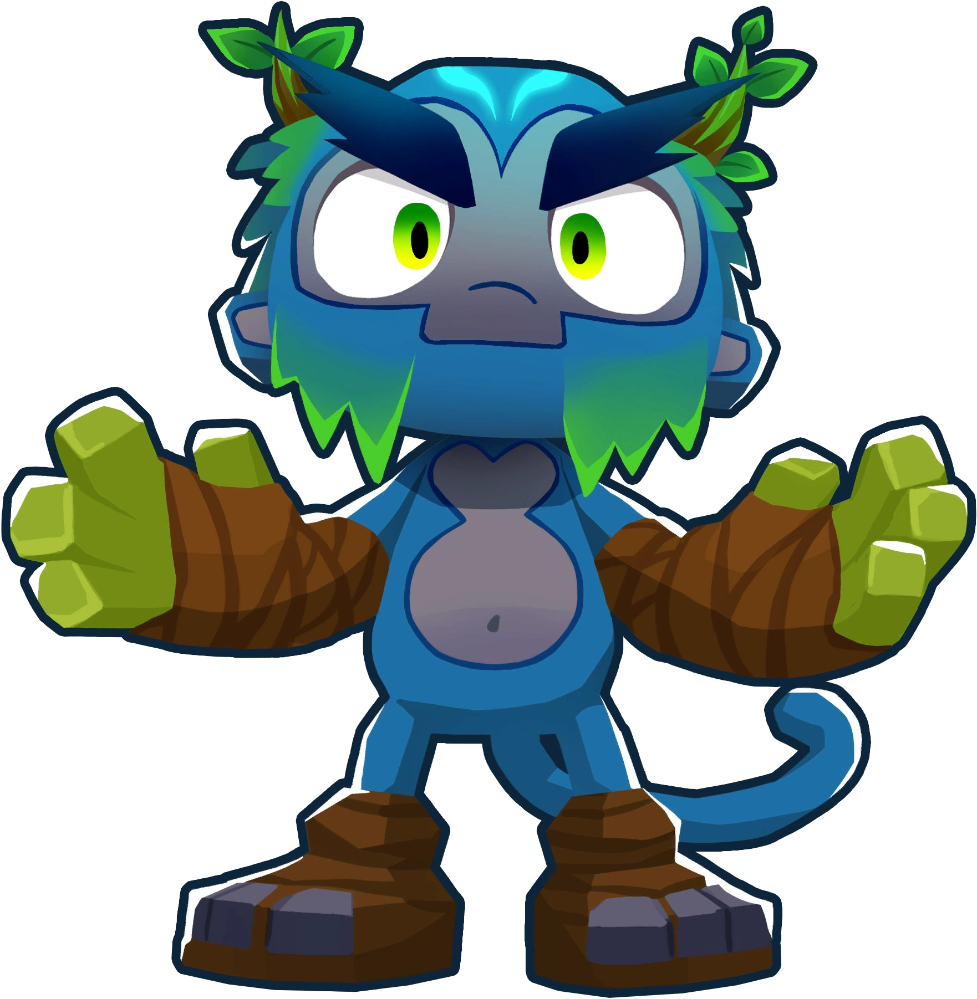

Es un juego en el cual peleas del lado de los monos, ocupas defender su aldea en contra de globos malvados radioactivos, puedes emplear distintas estrategias para llevar esto a cabo, pero todo está en ti y los monos. Este sitio trata sobre la información general del juego, en que consiste, y las estrategias que puedes emplear.
Existe una gran variedad de monos, pero al comienzo del juego tienes pocas opciones en cuanto con que empezar, la estrategia que recomiendo es poner tres monos darderos o el héroe Quincy, ya que estos pueden lidear con las rondas iniciales fácilmente, ya de ahí puedes utilizar los monos que veas más óptimos para la situación.
El juego cuenta con más de 140 logros por obtener, cada uno dando una recompensa, por lo cual recomiendo que los completes en cuanto puedas, ya que puedes utilizar estos premios para desbloquear más monos y poder comprar skins
Poderosos jefes los cuales encuentras en modos especiales que duran por cierta cantidad de días, una vez que entras en juego contra un jefe tienes que usar las estrategias más eficientes para obtener dinero si quieres tener esperanza en derrotarlos.
Mi nombre es: Denzel Isaac Uriarte Munoz
Materia: Informatica IV.
Mi grupo es: 4E